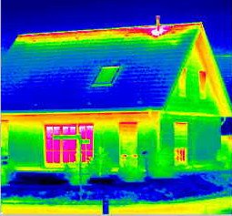
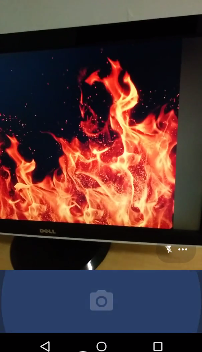
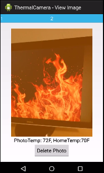

|  | Thermal Camera App |
| Link to APK | Link to Source |
This application allows the user to capture images with their phone's camera. Ideally, when the photo is taken, a thermal infrared sensor would then capture the temperature of the observed object. However, due to hardware failures, the user must instead enter the temperature manually. Images are then saved to a gallery with a red, blue, or white overlay depending on difference between the oberseved object and the room temperature. We coded in Android Eclipse using API 18. We tested this application by using every feature and evaluating if it behaved in accordance to our project specification. |
|
|  |  |
| Link to Youtube screencast and display of hardware | |